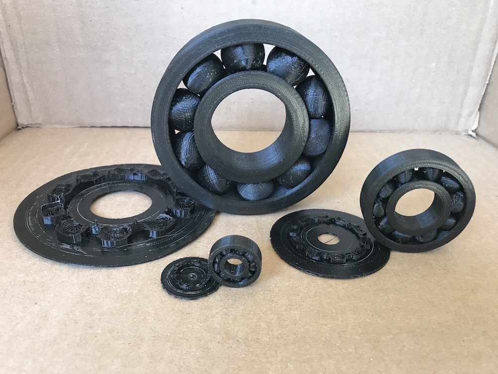
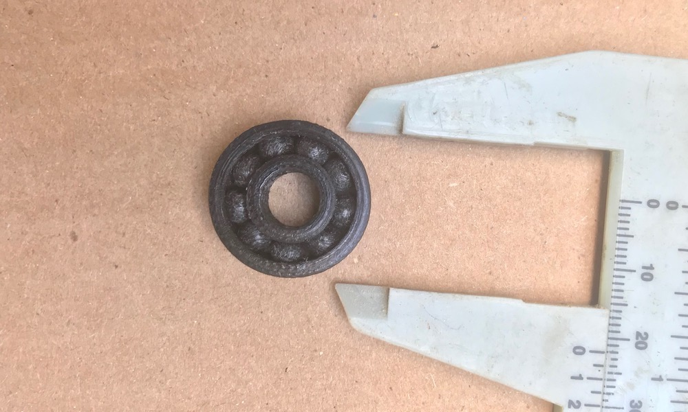
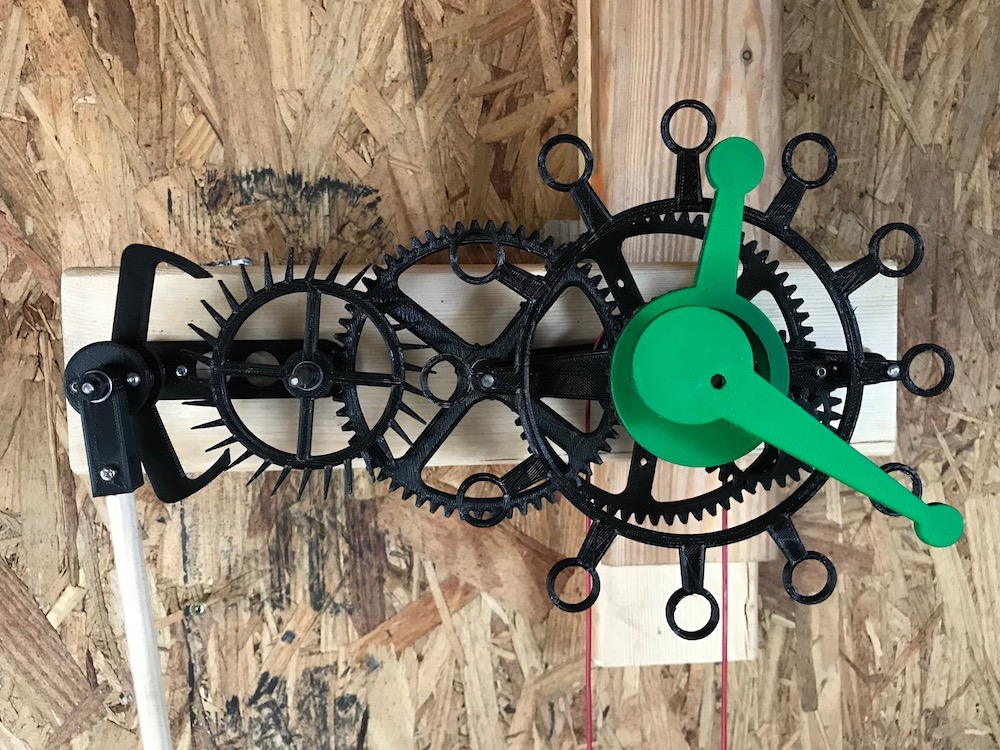

We live in a great time!
Bearings
Today, 3D printing allows everyone to have a fabrication machine at their finger’s tips. The focus here is to build a product that contains multiple moving parts all at once:
On this page it is about a ball bearing.

3 Examples here, the bigger bearing has a diameter of 100mm, the smaller one is 22mm.
Also on the picture, the raft and support they got printed on, all in PLA.
Design and settings
Here I will go in more details about a 608 size bearing. It has an outer diameter of 22 mm, inner diameter is 8 mm.

Bearing Presentation
Designed with Fusion 360. Sliced with Cura, with custom setting for the support.
Clock
Today, 3D printing allows everyone to have a fabrication machine at their finger’s tips. The focus here is to build finished mechanical parts, like gears that make it possible to build a mechanical clock. The escapement is the most challenging part to design, all the dimensions have to be just right. I found some valuable information on this clock repair website.